as of 2026-05-27T18:57:21
| Signal | Value | Interpretation |
|---|---|---|
| 01 QDII Nasdaq premium | 6.62 % | HOT — likely contrarian SHORT |
| 02 QQQ vs 200d SMA | 1.187 ratio | ABOVE SMA200 (trend) |
| 03 VIX | 16.92 pts | neutral |
| 04 Gold/Copper z (252d) | -0.98 z | neutral |
| 05 DXY 6m change | -1.05 % | neutral |
| 06 10Y-3M spread | 0.09 % | FLAT |
| 07 AH premium | — | history unavailable in this run |
| 08 North 20d flow | -279.9 | OUTFLOW |
| 09 IWM/SPY z (252d) | 1.5 | small-cap STRONG (risk-on) |
| 10 ln(BTC/Gold) z (252d) | -0.9 | neutral |
close 730.28, SMA200 615.47
ratio 705.52
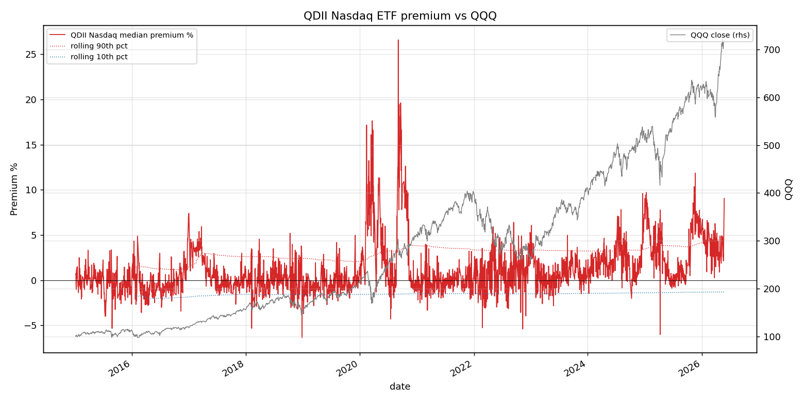
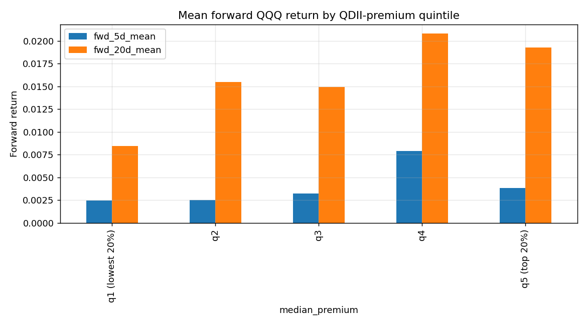
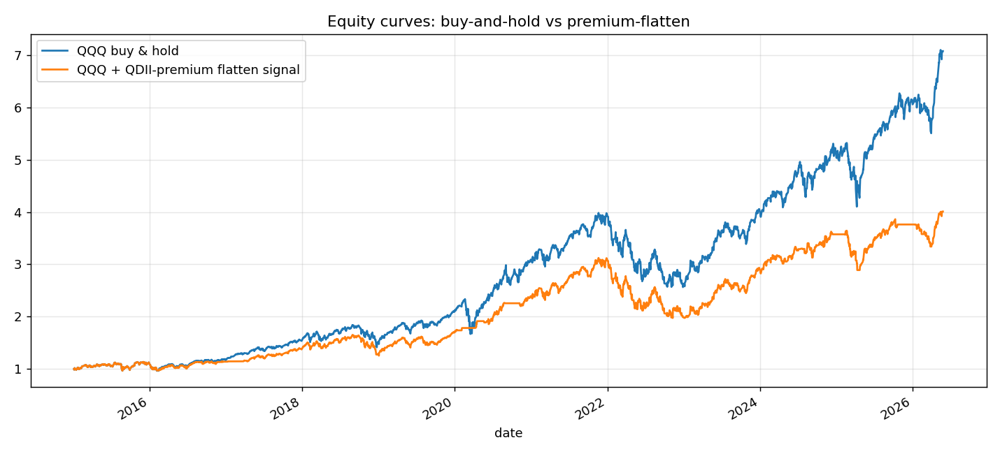
QDII funds used: QDII513100, QDII513300, QDII159941
Observations: 2743 range 2015-01-05 → 2026-05-25
Latest premium: 9.05% on 2026-05-25
Latest 90th-pct threshold: 4.53% 10th-pct: -1.29%
| median_premium | fwd_5d_mean | fwd_5d_winrate | fwd_20d_mean | fwd_20d_winrate | n_samples |
|---|---|---|---|---|---|
| q1 (lowest 20%) | 0.0024 | 0.5894 | 0.0084 | 0.646 | 548 |
| q2 | 0.0025 | 0.5938 | 0.0155 | 0.7104 | 549 |
| q3 | 0.0032 | 0.5894 | 0.0149 | 0.702 | 548 |
| q4 | 0.0079 | 0.6569 | 0.0208 | 0.7161 | 548 |
| q5 (top 20%) | 0.0038 | 0.5743 | 0.0193 | 0.6248 | 545 |
| name | n_days | total | cagr | sharpe | maxdd |
|---|---|---|---|---|---|
| QQQ buy & hold | 2743 | 6.0742 | 0.1969 | 0.9308 | -0.3562 |
| QQQ + QDII-premium flatten signal | 2743 | 3.0098 | 0.1361 | 0.8105 | -0.3675 |
Reading: if `fwd_5d_mean` falls as the quintile rises (q1 highest,
q5 lowest), the contrarian premise holds.
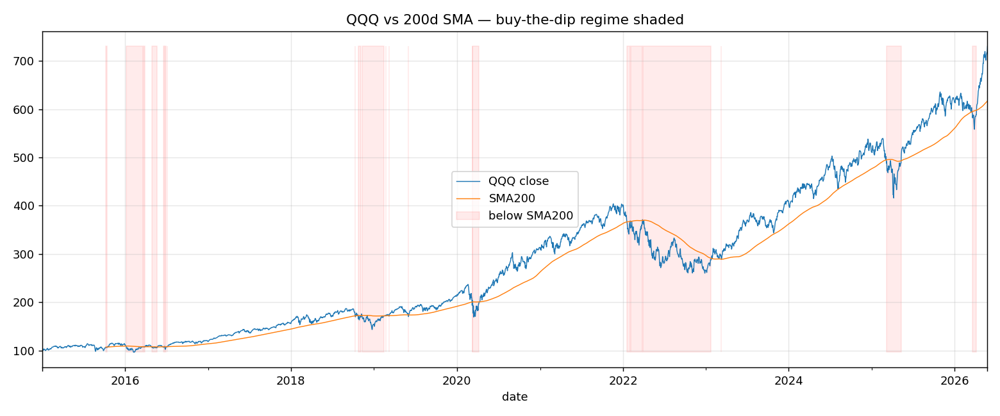
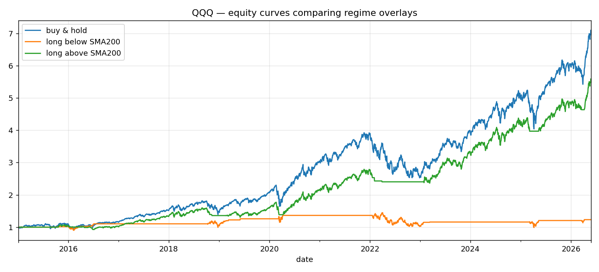
Latest QQQ 730.28, SMA200 617.15, ratio 1.183
Above-SMA regime currently active.
| close | n | fwd20_mean | fwd60_mean | fwd60_win |
|---|---|---|---|---|
| ≤0.85 | 62 | 0.0457 | 0.0463 | 0.5968 |
| 0.85-0.95 | 253 | 0.0189 | 0.0473 | 0.6245 |
| 0.95-1.00 | 209 | 0.0053 | 0.0352 | 0.6986 |
| 1.00-1.05 | 346 | 0.018 | 0.0645 | 0.737 |
| 1.05-1.15 | 1583 | 0.0159 | 0.0406 | 0.7669 |
| >1.15 | 321 | 0.0043 | 0.0322 | 0.6293 |
| name | n_days | total | cagr | sharpe | maxdd |
|---|---|---|---|---|---|
| QQQ buy & hold | 2973 | 6.0942 | 0.1807 | 0.8813 | -0.3562 |
| Long only when close ≤ SMA200 | 2973 | 0.2326 | 0.0179 | 0.195 | -0.318 |
| Long only when close > SMA200 | 2973 | 4.5868 | 0.157 | 1.0332 | -0.2188 |
Read-out: buy-the-dip generally underperforms buy-and-hold over the full
sample (you miss the strongest trend days), but its **per-day-invested**
return is informative for tactical sizing.
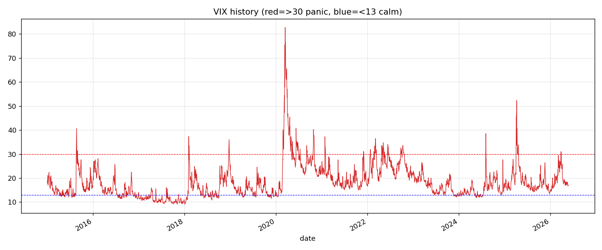
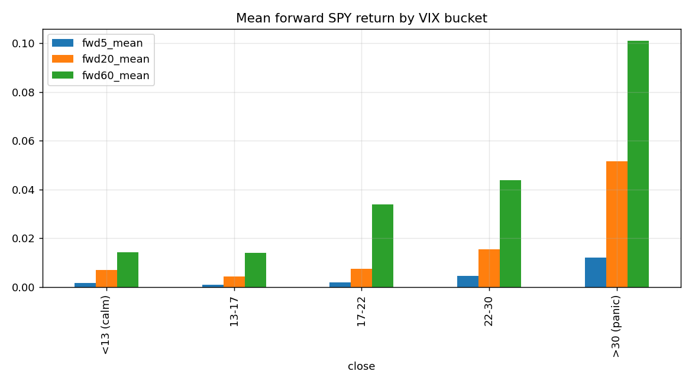
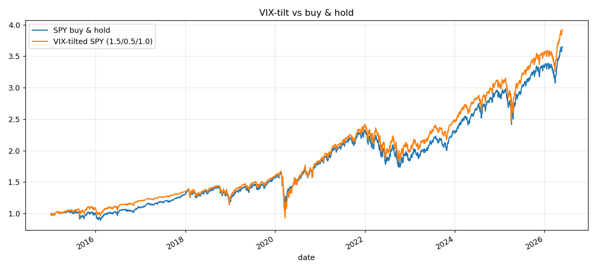
Latest VIX 17.01 on 2026-05-26
| close | n | fwd5_mean | fwd20_mean | fwd60_mean | fwd20_win |
|---|---|---|---|---|---|
| <13 (calm) | 535 | 0.0017 | 0.007 | 0.0142 | 0.6879 |
| 13-17 | 969 | 0.001 | 0.0043 | 0.0139 | 0.6533 |
| 17-22 | 733 | 0.0019 | 0.0075 | 0.0339 | 0.6276 |
| 22-30 | 470 | 0.0045 | 0.0155 | 0.0438 | 0.6681 |
| >30 (panic) | 158 | 0.012 | 0.0517 | 0.1009 | 0.8481 |
| name | n_days | total | cagr | sharpe | maxdd |
|---|---|---|---|---|---|
| SPY buy & hold | 2865 | 2.6538 | 0.1207 | 0.7319 | -0.341 |
| VIX-tilted SPY (1.5/0.5/1.0) | 2865 | 2.9225 | 0.1277 | 0.6724 | -0.4419 |
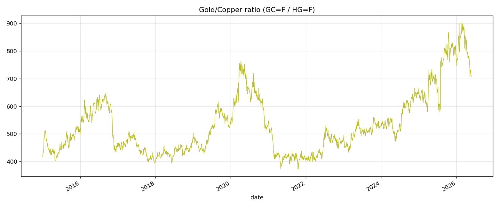
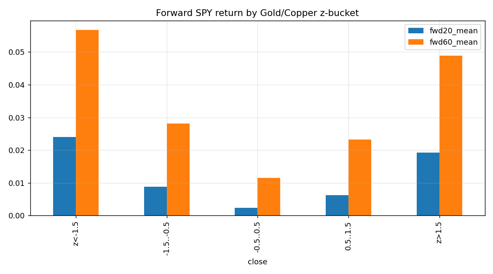
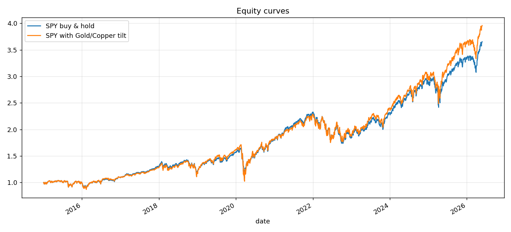
Latest ratio: 707.50 z-score: -0.96
| close | n | fwd20_mean | fwd60_mean | fwd60_win |
|---|---|---|---|---|
| z<-1.5 | 246 | 0.024 | 0.0568 | 0.9634 |
| -1.5..-0.5 | 467 | 0.0089 | 0.0281 | 0.803 |
| -0.5..0.5 | 426 | 0.0024 | 0.0116 | 0.6761 |
| 0.5..1.5 | 748 | 0.0063 | 0.0232 | 0.6578 |
| z>1.5 | 724 | 0.0192 | 0.0489 | 0.7845 |
| name | n_days | total | cagr | sharpe | maxdd |
|---|---|---|---|---|---|
| SPY buy & hold | 2862 | 2.6538 | 0.1209 | 0.7323 | -0.341 |
| SPY with Gold/Copper tilt | 2862 | 2.9588 | 0.1288 | 0.7142 | -0.4028 |
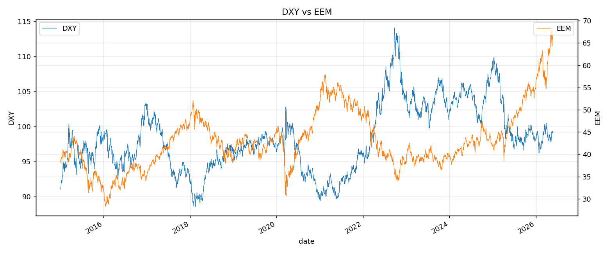
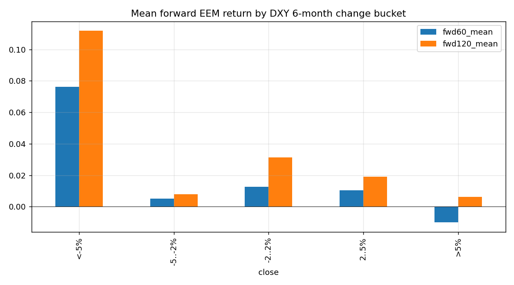
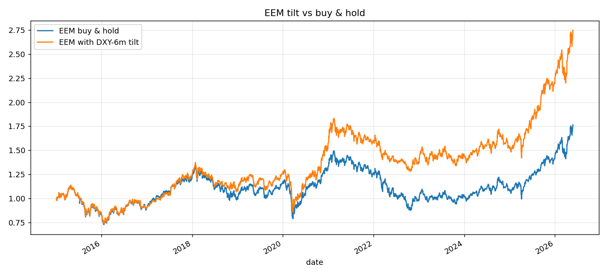
Latest DXY 99.15, 6m change -1.01%
| close | n | fwd60_mean | fwd120_mean | fwd120_win |
|---|---|---|---|---|
| <-5% | 348 | 0.0762 | 0.1118 | 0.8621 |
| -5..-2% | 458 | 0.0051 | 0.008 | 0.4672 |
| -2..2% | 1031 | 0.0128 | 0.0312 | 0.5587 |
| 2..5% | 525 | 0.0105 | 0.019 | 0.5562 |
| >5% | 375 | -0.0098 | 0.0063 | 0.5333 |
| name | n_days | total | cagr | sharpe | maxdd |
|---|---|---|---|---|---|
| EEM buy & hold | 2863 | 0.7643 | 0.0512 | 0.3448 | -0.4146 |
| EEM with DXY-6m tilt | 2863 | 1.7476 | 0.093 | 0.5393 | -0.3761 |
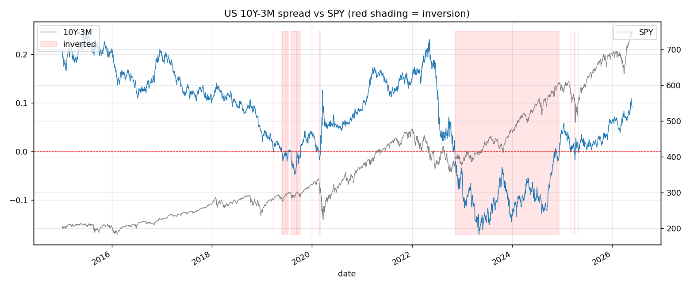
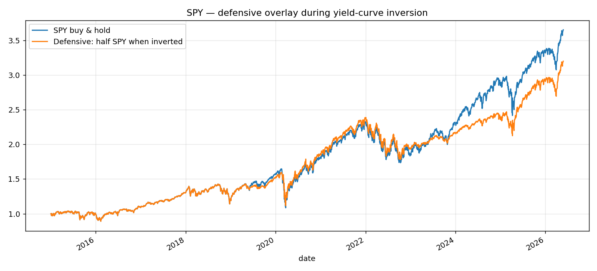
Latest spread 0.09% inverted=False
Number of re-steepening events in sample: 14
Mean fwd60 SPY after re-steepen: 0.0405 vs base 0.0286
Mean fwd252 SPY after re-steepen: 0.1379 vs base 0.1279
| name | n_days | total | cagr | sharpe | maxdd |
|---|---|---|---|---|---|
| SPY buy & hold | 2864 | 2.6538 | 0.1208 | 0.7321 | -0.341 |
| Defensive: half SPY when inverted | 2864 | 2.2008 | 0.1078 | 0.6988 | -0.3013 |
No plots (idea was skipped).
AH premium index history was not retrievable through the current
akshare endpoints in this environment. Skipping idea-07 backtest;
the daily live snapshot can still be obtained via the dashboard.
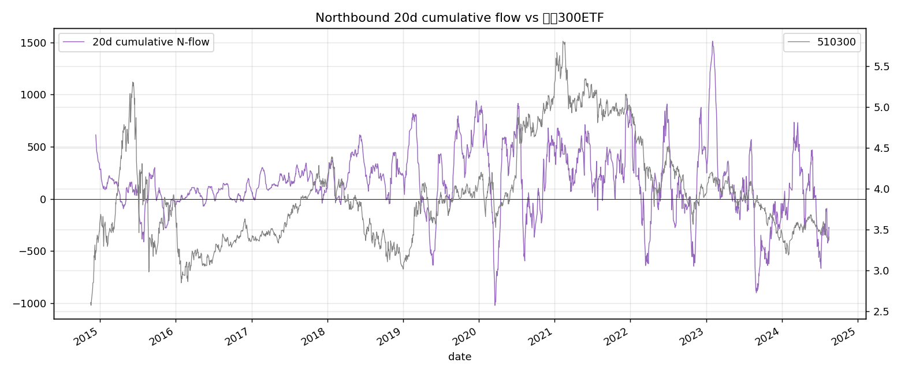
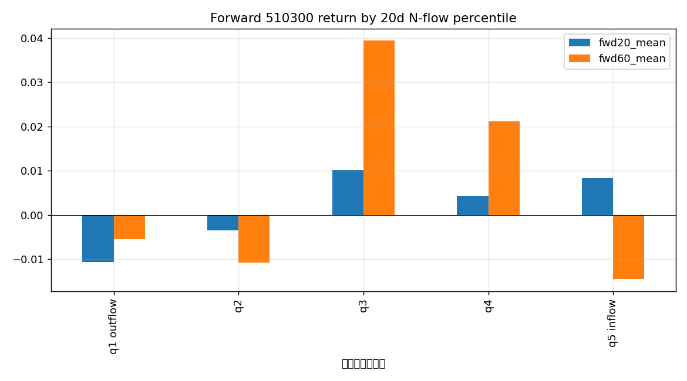
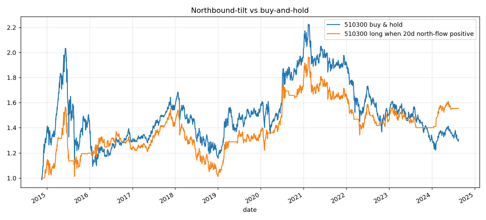
Latest 20d cumulative flow: -279.94
| 当日成交净买额 | n | fwd20_mean | fwd60_mean | fwd60_win |
|---|---|---|---|---|
| q1 outflow | 449 | -0.0106 | -0.0055 | 0.4633 |
| q2 | 449 | -0.0035 | -0.0108 | 0.4922 |
| q3 | 449 | 0.0102 | 0.0395 | 0.6281 |
| q4 | 449 | 0.0043 | 0.0211 | 0.5256 |
| q5 inflow | 449 | 0.0083 | -0.0146 | 0.3608 |
| name | n_days | total | cagr | sharpe | maxdd |
|---|---|---|---|---|---|
| 510300 buy & hold | 2264 | 0.307 | 0.0303 | 0.2449 | -0.4631 |
| 510300 long when 20d north-flow positive | 2264 | 0.5533 | 0.0502 | 0.358 | -0.3542 |
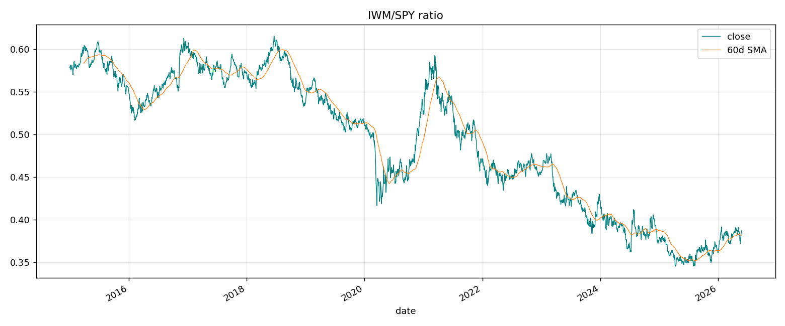
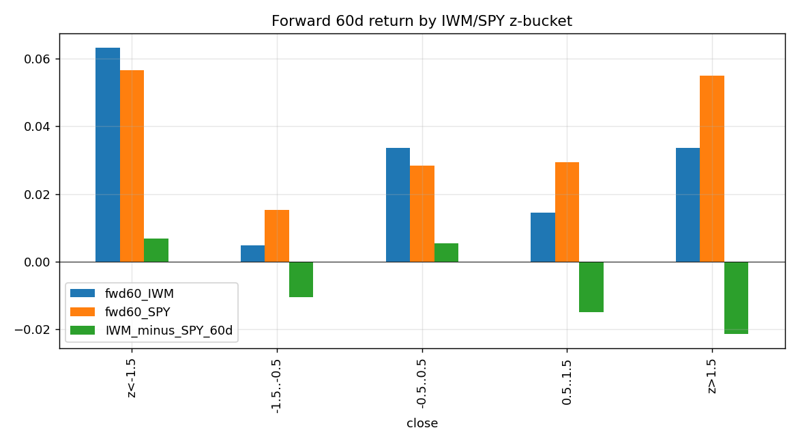
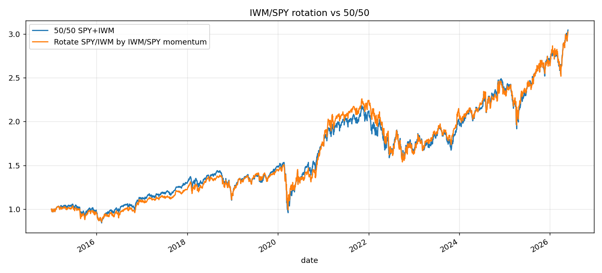
Latest ratio 0.3870, z=1.50
| close | n | fwd60_IWM | fwd60_SPY | IWM_minus_SPY_60d |
|---|---|---|---|---|
| z<-1.5 | 575 | 0.0634 | 0.0567 | 0.0067 |
| -1.5..-0.5 | 927 | 0.0047 | 0.0153 | -0.0106 |
| -0.5..0.5 | 504 | 0.0337 | 0.0284 | 0.0053 |
| 0.5..1.5 | 339 | 0.0144 | 0.0294 | -0.015 |
| z>1.5 | 269 | 0.0335 | 0.0551 | -0.0215 |
| name | n_days | total | cagr | sharpe | maxdd |
|---|---|---|---|---|---|
| 50/50 SPY+IWM | 2865 | 2.0433 | 0.1028 | 0.6015 | -0.3743 |
| Rotate SPY/IWM by IWM/SPY momentum | 2865 | 2.0205 | 0.1021 | 0.5899 | -0.341 |
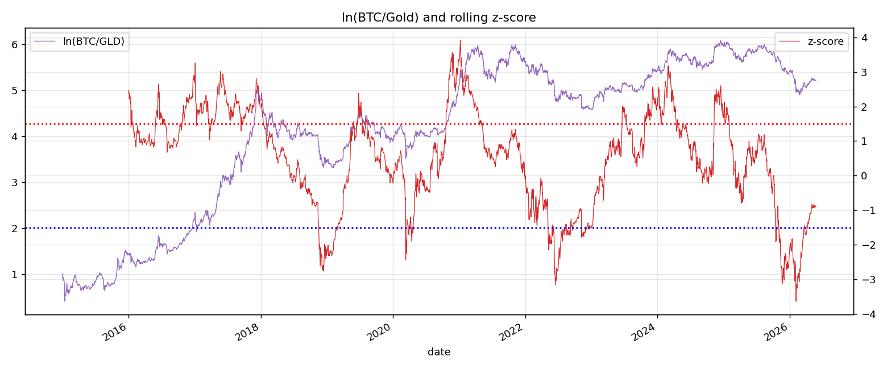
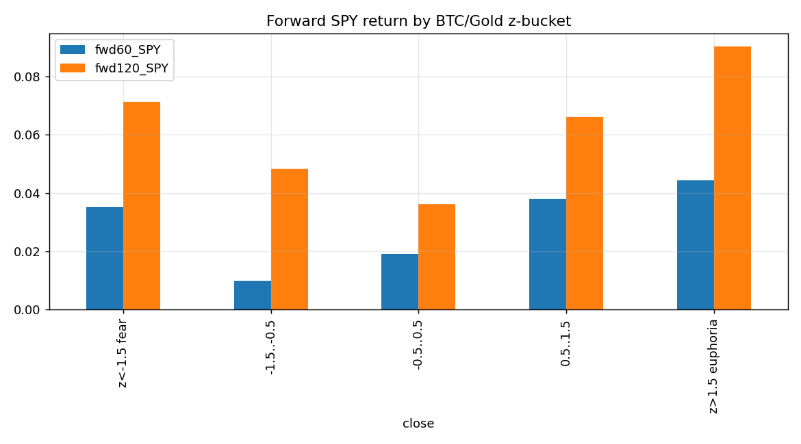
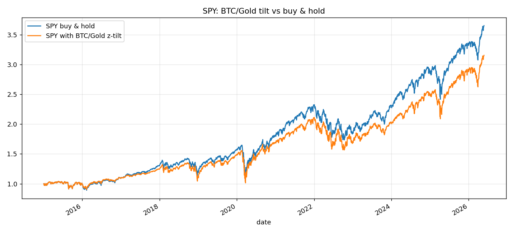
Latest ln(BTC/GLD) z = -0.90
| close | n | fwd60_SPY | fwd120_SPY | fwd120_win |
|---|---|---|---|---|
| z<-1.5 fear | 295 | 0.0352 | 0.0714 | 0.5695 |
| -1.5..-0.5 | 294 | 0.01 | 0.0483 | 0.5748 |
| -0.5..0.5 | 542 | 0.0191 | 0.0361 | 0.5609 |
| 0.5..1.5 | 790 | 0.0381 | 0.0661 | 0.8418 |
| z>1.5 euphoria | 693 | 0.0443 | 0.0904 | 0.9538 |
| name | n_days | total | cagr | sharpe | maxdd |
|---|---|---|---|---|---|
| SPY buy & hold | 2865 | 2.6538 | 0.1207 | 0.7319 | -0.341 |
| SPY with BTC/Gold z-tilt | 2865 | 2.1553 | 0.1064 | 0.6408 | -0.3488 |